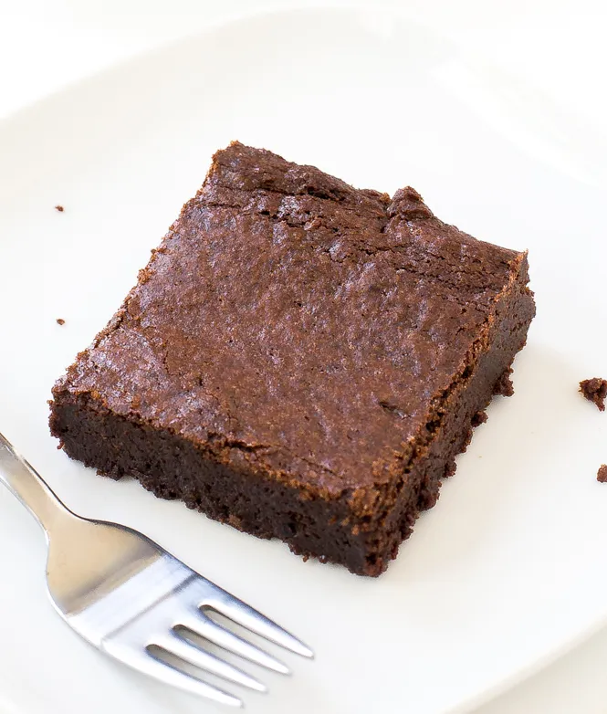

Yummy (and Healthy) Protein Brownies

Description
Brownies are a staple confection. Growing up, our parents would tell us that brownies were incredibly unhealthy, and when you look at the large calorie count,
they were probably right. These brownies are a healthier alternative, that is high in protein, and generally uses healthier ingredients. While you probably
shouldn't be eating these every day, they are a much healthier alternative!
Ingredients
Source of Recipe
- 1 cup almond butter
- 2 eggs
- 1/2 cup sugar free maple syrup
- 1/4 cup unsweetened almond milk
- 1 teaspoon vanilla extract
- 1/2 cup Choclate Protein Powder
- 1/4 cup cocoa powder
- 1/4 teaspoon sea salt
- 1 teaspoon baking powder
- 1/2 cup lowfat choclate chips
Steps
- Preheat oven to 350°F. Grease baking pan.
- Whisk eggs, almond butter, eggs, maple syrup, almond milk, and vanilla extract
- Add protein powder,cocoa poder, sea salt, and baking powder to mixing bowl and continue stirring until combined
- Add milk if batter is dry
- Fold in choclate chips gently
- Now transfer to a baking fan and bake for 25-30 minutes. Let the brownees cool, and cut into squares and enjoy!
Return to the main page